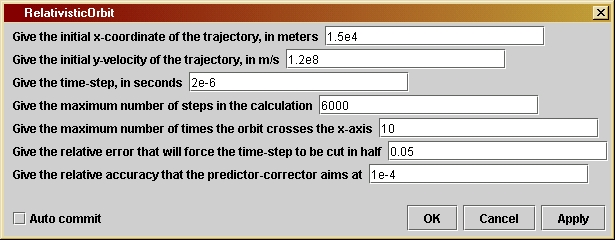

RelativisticOrbitversion 1.0
© 2003 Bernard Schutz
|
With this program the user can explore the differences between orbits in the Schwarzschild metric and those around a Newtonian star. The relativistic orbits precess, which means that they follow roughly elliptical orbits but the axes of the ellipse turn in space, so the orbits do not close. The program stops the calculation for any orbit that reaches the horizon of the black hole.
By
opening the
parameter window (shown at the left), the user can set or change
various
parameters. The first two are the starting position (on the x-axis) and
starting velocity (in the y-direction) of the particle. The remaining
parameters
control the operation of the program. The time-step, maximum number of
steps, and accuracy parameters are similar to those in Orbit.
The fifth parameter allows the user to determine the number of orbits
in
the calculation. In previous programs, like Orbit,
we stopped automatically after one orbit, since each successive orbit
is
the same. But in the relativistic problem, each orbit is different, so
the user can specify how many to output. The program will stop when
this
number is reached or when the maximum number of time-steps is reached,
whichever happens first.
RelativisticOrbit is a simple
modification
of Orbit in which the Newtonian
acceleration
is replaced by the relativistic form, given in Equation 21.5. This is
put
into the acceleration expressions but otherwise the program is not
modified
in essential ways. Thus, the acceleration components are computed in
lines
like
double
x0 = xInit;
double
y0 = 0.0;
double
r2 = x0*x0 + y0*y0;
double
r = Math.sqrt( r2 );
double
r3 = r*r2;
double
K = 0.5 * u * x0;
double
Q = 12 * K * K / c2;
double
ax0 = -kGravity*x0/r3*(1 + Q/r2);
double
ay0 = -kGravity*y0/r3*(1 + Q/r2);
Here K is Kepler's constant, Q the coefficient of the extra term in
the equation of motion. Both of these are constants along the orbit.
The other major innovation is to allow the program to move through
many
orbits. Here we introduce the counter nOrbits
whose number must be smaller than maxOrbits,
which is set by the user.
If you want to change the program you will have to re-compile it, as
explained by the help file Using Triana for
Gravity
from the ground up.
/*
uInit is the initial value of the
y-velocity in meters per
second. This is given a default
value but its value for any
run is set by the user in the
parameter
window. The initial
value of v (the x-velocity) is fixed
at 0 at the beginning
of each orbit calculation.
*/
private double uInit;
/*
dt is the time-step in seconds.
It has a default value but it can
be set by the user in the parameter
window.
*/
private double dt;
/*
maxSteps is the maximum number of
steps in the calculation. This is
used to ensure that the calculation
will stop even if initial values
are chosen so that the projectile
goes far away. It is given
a default value but it can be set
by the user in the parameter window.
*/
private int maxSteps;
/*
maxOrbits is the maximum number
of orbits to be computed. It
is given a default value but it
can be set by the user in the
parameter window.
*/
private int maxOrbits;
/*
eps1 sets the accuracy of the
time-step.
If computed quantities
change by a larger fraction than
this in a time-step, the time-step
will be cut in half, repeatedly
if necessary. Its value for any run
is set by the user in the parameter
window.
*/
private double eps1;
/*
eps2 sets the accuracy of the
predictor-corrector
step. Averaging
over the most recent time-step is
iterated until it changes by
less than this relative amount.
Its value for any run is set by
the user in the parameter window.
*/
private double eps2;
/*
Three constants we need for the
calculation. They are not defined
in the parameter window, but given
permanent values here.
- kGravity is GMsolar, the
gravitational
constant appropriate for a black
hole the mass of the
Sun
- c2 is the speed of light squared
- horizon is the radius of the
Schwarzschild
horizon, used for stopping
the calculation if the
body falls inside the horizon
*/
private double kGravity = 1.327E20;
private double c2 = 8.98755e16;
private double horizon = 2 * kGravity / c2;
/*
Define and
initialize the variables we will need. The position
and velocity
components are referred to an x-y coordinate system
whose origin
is at the central gravitating mass. We need the
following
variables for the calculation:
- dt1 will
be used as the "working" value of the time-step, which can
be changed during the calculation. Using dt1 for the time-step allows
us to keep dt as the original value, as specified by the user. Thus,
dt1 is set equal to dt at the beginning of the calculation, but it may
be
reduced at any time-step, if accuracy requires it.
- v and
u are the x- and y-speed, given here their initial values.
- x0 and
y0 are variables that hold x- and y-coordinate values.
- r2 is
the square of the coordinate distance of the point (x0, y0) from
the central mass.
- r is the
square root of r2, hence the Schwarzschild radial coordinate.
- r3 is
the cube of the Schwarzschild radial coordinate distance.
- K is the
Kepler constant, half the angular momentum
- Q is the
constant in the Kepler term that enters the acceleration law,
12K^2/c^2.
- ax0 and
ay0 are the x-acceleration and y-acceleration, respectively,
at the location (x0, y0), using the modified Newtonian law that gives
the Schwarzschild acceleration.
-
xCoordinate
and yCoordinate are used to store the values of
x and y at each timestep. They are arrays of length maxSteps.
- horizonX
and horizonY are the coordinates of 101 points along the
Schwarzschild horizon. They will be output along with the orbit in order
to show where the orbit is in relation to the horizon. Their values
are initialized here and then not used again until the output stage. The
variable angleStep is used only in this calculation, being the step in
angle going around the horizon. We use 101 points so that the horizon is
a closed curve: the final point lies on top of the first.
*/
double dt1 = dt;
double v = 0.0;
double u = uInit;
double x0 = xInit;
double y0 = 0.0;
double r2 = x0*x0 +
y0*y0;
double r = Math.sqrt(
r2 );
double r3 = r*r2;
double K = 0.5 * u *
x0;
double Q = 12 * K *
K / c2;
double ax0 =
-kGravity*x0/r3*(1
+ Q/r2);
double ay0 =
-kGravity*y0/r3*(1
+ Q/r2);
double[] xCoordinate
= new double[ maxSteps ];
double[] yCoordinate
= new double[ maxSteps ];
xCoordinate[0] = x0;
yCoordinate[0] = y0;
double[] horizonX =
new double[101];
double[] horizonY =
new double[101];
double angleStep =
Math.PI
/ 50;
for ( int i = 0; i <
101; i++ ) {
horizonX[i] = horizon * Math.cos( angleStep * i );
horizonY[i] = horizon * Math.sin( angleStep * i );
}
/*
Now define
other variables that will be needed, but without giving
initial
values. They will be assigned values during the calculation.
- x1 and
y1 are temporary values of x and y that are needed during the
calculation.
- ax1 and
ay1 are likewise temporary values of the x- and y-acceleration.
- dx and
dy are variables that hold part of the change in x and y that
occurs during a time-step.
- ddx0,
ddy0, ddx1, and ddy1 are variables that hold other parts of
the changes in x and y during a time-step. The reason for having both
dx and ddx will be explained in comments on the calculation below.
- dv and
du are the changes in velocity that occur during a time-step.
-
testPrediction
will hold a value that is used by the predictor-corrector
steps to assess how accurately the calculation is proceeding.
- angleNow
holds the angular amount by which the planet has advanced in its
orbit at the current time-step.
- j and
k are integers that will be used as loop counters.
*/
double x1, y1, ax1,
ay1, dv, du, dx, dy, ddx0, ddy0, ddx1, ddy1;
double testPrediction,
angleNow;
int j, k;
/*
Finally,
we introduce some variables that are used to determine when the
trajectory
completes maxOrbits orbits, so that the program can stop. This is
done in
exactly the same way as in Orbit, except that we allow more than one
orbit, and
we don't have to allow for a general starting position and
velocity.
Users should read the comments in the code for Orbit before
trying to
understand the code here.
We
intrdoduce
one new variable:
- nOrbits
is the current number of full orbits completed.
*/
double nOrbits = 0;
boolean counterclockwise
= ( uInit > 0 );
boolean fullOrbit =
false;
boolean halfOrbit =
false;
/*
Now start
the loop that computes the trajectory. The loop counter
is j, which
(as in Orbit) starts at 1 and increases by 1 each
step. The
test for exiting from the loop will be either that the
trajectory
has made enough orbits, or that the number of steps exceeds
the maximum
set by the user, or that the body has fallen across the
horizon
into the black hole. The logical expression that provides the
test is
( r > horizon ) && ( nOrbits < maxOrbits ) && ( j
<
maxSteps )
*/
for ( j = 1; ( ( r >
horizon ) && ( nOrbits < maxOrbits ) && ( j
<
maxSteps ) ); j++ ) {
/*
- Set dv and du to the changes in x- and y-speeds that would occur
during time dt1 if the acceleration were constant at (ax0, ay0).
- Similarly set dx and dy to the changes in position that would
occur if the velocity components v and u were constant during the
time dt1.
- Set ddx0 and ddy0 to the extra changes in x and y that occur because
the velocity changes during the time dt1. The velocity change that
is used is only dv/2 (or du/2, respectively) because the most
accurate change in position comes from computing the average
velocity during dt1. We separate the two position changes, dx and
ddx0, because dx will be unchanged when we do the predictor-corrector
below (the change in position due to the original speed is always
there), while ddx0 will be modified when ax0 and hence dv is modified
by the predictor-corrector.
- Finally, set ddx1 and ddy1 to ddx0 and ddy0 initially. They will
change when we enter the predictor-corrector code.
*/
dv = ax0*dt1;
du = ay0*dt1;
dx = v*dt1;
dy = u*dt1;
ddx0 = dv/2*dt1;
ddy0 = du/2*dt1;
ddx1 = ddx0;
ddy1 = ddy0;
/*
Now advance the position of the satellite by our initial estimates of
the position changes, dx + ddx0 and dy + ddy0. Compute the radial
distance of this new position and the acceleration there.
*/
x1 = x0 + dx + ddx0;
y1 = y0 + dy + ddy0;
r2 = x1*x1 + y1*y1;
r = Math.sqrt(r2);
r3 = r*r2;
ax1 = -kGravity*x1/r3*(1 + Q/r2);
ay1 = -kGravity*y1/r3*(1 + Q/r2);
/*
Time-step check.
This is the code to check whether the time-step is too large. The idea
is to compare the changes in acceleration during the timestep with the
acceleration itself. If the change is too large a fraction of the
original value, then the step is likely to be too large, and the
resulting
position too inaccurate. The code below cuts the time-step dt1 in half
and then goes back to the beginning of the loop. This is explained
below.
But first we explain the test itself.
There is no unique test for this, nor does there need to be. If the
time-step
is cut in half the calculation will be more accurate, so generally in
a test like this one tries to formulate the test just to make sure that
some kind of inaccuracy is being measured. Here the test is to compute
the absolute value of the change in the x-acceleration, ax1-ax0, and add
that to the absolute value of the change in the y-acceleration, ay1-ay0,
to get a measure of how big the change in acceleration is. This is then
compared with the "original" acceleration, which is similarly measured
by the sum of the absolute values of the components of the acceleration
at the start of the time-steps, |ax0| + |ay0|. The comparison is
simple: the user chooses the small number eps1, and if the changes
are larger than eps1 times the original, then the time-step is changed.
The test has the form of the logical comparison
change > eps * original
where "change" and "original" are computed as above.
The action that is taken is simple:
- If the changes are too large, the time-step is cut in half (dt1 /= 2)
and the loop index j is decreased by 1 (j--). Nothing else happens after
this point in the loop: the rest of the code after this is inside the
"else"
clause that is executed if the change is small enough. So this pass
through the loop ends after the statement "j--;". The reason for
decreasing j is that the "for" statement automatically increases
j each time, but we want j to remain the same, since we are re-doing
the same time-step with a smaller value of dt1.
- If the changes are sufficiently small, the "else" clause is executed
instead. This keeps the value of dt1 the same. The "else" clause
contains the predictor-corrector step that is described in the comments
below.
*/
if ( Math.abs(ax1-ax0) + Math.abs(ay1-ay0) > eps1*(Math.abs(ax0) +
Math.abs(ay0))
){
dt1 /= 2;
j--;
}
else {
/*
Predictor-corrector step.
Now that the time-step dt1 is fixed, we address the other new feature
of this program, which is to ensure that the position changes are
computed using the average velocity over the time dt1. This in turn
requires us to calculate the velocity change, also by averaging the
acceleration. But the acceleration is a function of position, so we
do not know how to average it until we find the final position. This
is a circular requirement, and cannot be solved in a single step.
However, it can be solved iteratively. That is, one can make a guess
and keep refining it.
The initial guess has already been made: we have computed values of
dx, dy, ddx0, and ddy0 from the data available at the beginning of
the current time-step. Recall that dx and dy depend only on the
velocity at the beginning of the time-step, but ddx0 and ddy0 depend
on the acceleration. So we will refine them, computing replacement
values ddx1 and ddy1 as we get better values for the acceleration at
the end of the time-step. The refinement is done in another loop, whose
counter is k below. Before enetering the loop, we define a
variable called testPrediction which stores a measure of how large
the initial guesses are, so that we can stop the iteration when the
refined values do not change by much.
The for loop is limited to at most 10 iterations. This is to prevent
it from getting stuck for some reason and never finishing. Ten
iterations should be sufficient for any reasonable problem.
*/
testPrediction = Math.abs(ddx0) + Math.abs(ddy0);
for ( k = 0; k < 10; k++ ) {
/* compute dv and du by averaging the acceleration over dt1 */
dv = (ax0 + ax1)/2*dt1;
du = (ay0 + ay1)/2*dt1;
/* compute ddx1 and ddy1 by averaging the velocity change */
ddx1 = dv/2*dt1;
ddy1 = du/2*dt1;
/*
Test the change in ddx and ddy since the last iteration.
If it is more than a fraction eps2 of the original, then
ddx and ddy have to be re-computed by finding the acceleration
at the refined position.
If the change is small enough, then the "else:" clause is
executed, which exits from the for loop using the statement
"break". This finishes the iteration and goes on to wrap up
the calculation.
*/
if ( Math.abs(ddx1-ddx0) + Math.abs(ddy1-ddy0) > eps2 *
testPrediction
) {
/* Re-define ddx0 and ddy0 to hold the values from the last iteration */
ddx0 = ddx1;
ddy0 = ddy1;
x1 = x0 + dx + ddx0;
y1 = y0 + dx + ddy0;
r2 = x1*x1 + y1*y1;
r = Math.sqrt( r2);
r3 = r*r2;
ax1 = -kGravity*x1/r3*(1 + Q/r2);
ay1 = -kGravity*y1/r3*(1 + Q/r2);
/*
We now have the "best" acceleration values, using the most
recent estimates of the position at the end of the loop.
The next statement to be executed will be the first statement
of the "for" loop, finding better values of dv, du, ddx1, and
ddy1.
*/
}
else break;
}
/*
The iteration has finished, and we have sufficiently accurate
values of the position change in ddx1 and ddy1. Use them to get
final values of x and y at the end of the time-step dt1 and store
these into x0 and y0, ready for the next time-step. Compute all
the rest of the variables needed for the next time-step and for
possible data output.
*/
x0 += dx + ddx1;
y0 += dy + ddy1;
ax0 = ax1;
ay0 = ay1;
v += dv;
u += du;
xCoordinate[j] = x0;
yCoordinate[j] = y0;
/*
Now test to see if the orbit has closed, i.e. if we have gone around
the central mass once. We do this in the same way as in the program
Orbit. Once we have a closed orbit, we increment nOrbits by 1 and
reset the boolean values of fullOrbit and halfOrbit so that they are
ready to track the next full orbit.
The computation will finish if the new value of nOrbits equals
maxOrbits.
*/
angleNow = Math.atan2(y0, x0);
if (angleNow > Math.PI) angleNow -= 2*Math.PI;
else if (angleNow < -Math.PI) angleNow += 2*Math.PI;
if (!halfOrbit) {
if (counterclockwise) halfOrbit = (angleNow < 0);
else halfOrbit = (angleNow > 0);
}
else {
if ( counterclockwise ) fullOrbit = (angleNow > 0);
else fullOrbit = (angleNow < 0);
}
if ( fullOrbit ) {
nOrbits++;
fullOrbit = false;
halfOrbit = false;
}
}
}
/*
The orbit
is finished. Now, as in previous programs, define arrays
to contain
the positions along the orbit with just the right size,
so that
no zeros are passed to the grapher. The value of j at this
point is
equal to the number of elements we need for the output arrays.
But in this
program, check which output choice has been made and
tailor the
output to this choice. First-time programmers can safely
ignore this
section.
*/
double[] finalX = new
double[j];
double[] finalY = new
double[j];
for ( k = 0; k <
j; k++ ) {
finalX[k] = xCoordinate[k];
finalY[k] = yCoordinate[k];
}
Curve out1 = new Curve(
finalX, finalY );
out1.setTitle("Orbit
of the body");
Curve out0 = new
Curve(
horizonX, horizonY );
out0.setTitle("Black
hole horizon");
out0.setIndependentLabels(0,"horizontal
distance (m)");
out0.setDependentLabels(0,"vertical
distance (m)");
outputAtNode( 0, out0
);
outputAtNode( 1, out1
);
}